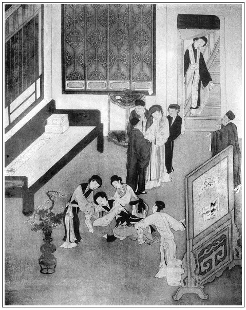

張回此回寫金蓮淘氣，乃先寫如意，總為金蓮淘氣之根也。
申二姐之見怒於春梅，而月娘乃與金蓮合氣，何也？曰以春梅實以玉簫故也。玉簫又月娘之婢也。玉簫婢私書僮，金蓮之所目睹者也。意中豈不曰：爾婢私人而不知，乃責我婢之罵人，且曰：奶子私主而不管，乃管我婢之罵人。況乎自不憤吹簫，其心高氣傲，已爭十二分體面。蓋自有瓶兒以至於今，方得其死後一暢，不知不覺，諸色盡露驕矜氣象，且也自元夜遊行之志，今即以瓶兒之衣酬之，其滿為何如？乃月娘一語拂之，宜乎其不能耐矣。而壬子之期又誤，故滿腹矜驕滿足，變為滿腹拂逆不憤，以與月娘鬧，蓋猶欲為憶吹簫之稿也。不知月娘止見春梅，不見玉簫，甚矣！不修其身，無以齊其家，月娘無以服金蓮，西門亦無以服月娘，皆不修身之謂也。信乎作者以陽秋之筆，隱罪月娘，而以玉簫明丑之也。
前文教眾人到嬌兒房中去，是一番羞怒。此回月娘說春梅，而金蓮護短，是一番羞怒。西門慶護短，又是一番羞怒。此月娘淘氣之由，而皮襖又是一番心事，合在其中發出，卻不在此帳算也。
皮襖者，瓶兒之衣也，乃月娘、金蓮爭之，直將其牆頭二人公同遞物心事說出。夫月娘、金蓮，西門慶之妻妾也，瓶兒，花家之人，三人並未謀面；乃一旦月娘為之設法，用盒抬銀，金蓮、月娘、春梅鋪氈，牆頭遞物，不啻與瓶兒一鼻孔出氣者，財之為事也。夫財在而月娘有心，金蓮豈無心？乃銀物俱歸上房，而金蓮之不憤可知。其挑月娘、西門不合於瓶兒入門時，蓋有由也。至於瓶兒入門，問金髻，西門詞語之間，上有愧色，況眾妻妾乎！其爭其妒，大抵由財色而起。夫財色有一，已足亡身。今瓶兒雙擅其二，宜乎其死之早，並害及其子也。至於死，金蓮快，而月娘亦快。金蓮快，吾之色無奪者；月娘快，彼之財全入己；故瓶兒著完壽衣，而鎖匙已入上房矣。此二人之隱衷也。乃金蓮之隱易知，而月娘之隱難見，今全於皮襖發之。何則？金蓮固日他人之財，均可得也，而月娘則久已認為己有矣。一旦西門令二婢一奶子守之，已不能耐。然而月娘老奸巨滑人也。回心一想，即守之於花樓下，乃我之外庫耳，且可息人之爭，故從之而下逆。今忽以皮襖與金蓮，是凡可取而與之者，皆非我所有也，能不急爭之乎？然而老奸巨滑者，必不肯以此而爭之，則春梅一罵之由，正月娘尋之而不得者也。而金蓮又有滿肚不憤乃一旦而對面，不至於撒潑不止也。寫月娘、金蓮必淘氣而散者，一見西門死後，不能容金蓮之故。且瓶兒先疏後合，金蓮先密後疏，正兩兩相照也。
寫月娘以子挾制其夫處，真是諸妾之不及，真是老奸巨滑。以此而知，從前燒夜香俱假也。作者特用陽秋之筆，又寫一隱惡之月娘與金蓮對也。
前瓶兒來，月娘掃雪，蓋與瓶兒合也，卻是玉樓生日。此與金蓮淘氣，是與金蓮疏也，卻又是玉樓生日。遙遙相對，為一大章法，大照應。
金蓮撒潑之先，卻寫一玉姐含酸。夫玉姐自入門時至今，何日不含酸？乃此日不能寧耐，何哉？蓋有懲於瓶兒也。何則？元夜取皮襖，玉樓、瓶兒皆有皮襖者也，是二人乃一體之人。今幾何時，而瓶兒之衣，已入他人之手，固應於伯爵家赴會時，現金蓮翩翩之態，而自動前車之悲也。況瓶兒之財，人爭利之，玉樓亦幾幾乎續之矣。明眼人豈不自知？固一念及，而薛媒婆之恨，已悔無及矣。此處寫含酸，特為李衙內引也。則又作者散場之筆，而何其神妙如此！
未娶金蓮，先娶玉樓；未散金蓮，先散玉樓。信乎玉樓為金蓮之襯疊文字也。
一路寫金蓮得意。不特瓶兒死後，諸事快意，即李桂兒被拿，又是第一快心之事。蓋欲為金蓮放心肆意於敬濟，以逼到武二哥手，故不得不為之極力寫其肆志快意之極也。桂兒寵而金蓮受辱，月兒寵而金蓮之出身處受污。總之，作者深惡金蓮，處處以娼妓丑之，且以娼妓丑其出身之所也。
爭鋒毀院後，月娘、瓶兒始合；驚走三官，月娘、金蓮已離：又是絕大章法。蓋前桂兒敗，而月娘快，金蓮亦快。兩快，而瓶兒容與其間矣。此文桂兒敗，而金蓮愈快，月娘未必快。愈快則驕，未必快則怒。宜乎金蓮、月娘之共相對敵也。月娘未必快者何？蓋以干女故也。看其前文為桂兒說東京人情，此文為桂兒解釋三官，儼然一李三媽之不啻。甚矣！作者特用大筆如椽寫一桂兒，蓋欲罵西門慶之妾為娼，而使其妻為老鴇兒也。故寫月娘純以陽秋者以此。混混看者，誰其知之？
看他寫相罵時，卻夾寫玉樓、嬌兒、大妗子、三尼諸人，真是心閒手敏。而雪娥必至鬧後方言，大姐在坐而無一言者，各人心事如畫。蓋雪娥自快，而大姐為瓶兒快之也。至於放去姥姥，又是絕妙乖滑之筆，分明借姥姥起端，卻是借起端為省筆。不然，月娘罵姥姥固不妙，姥姥阻金蓮與不阻金蓮亦不妙，文字大是礙手，不如一去之為暢快好寫也。
金蓮入門時，大書其顛寒作熱，聽籬察笆，蓋以一筆貫至此回也。
月娘罵處，卻都是瓶兒、雪娥舊話，是代從前受怨之人一齊發洩，然則怨怒之於人大矣哉！
此處寫玉樓，其雲雨處，與雪夜燒香之月娘一樣，而西門亦是一樣抱慚。然而玉樓自是含酸，月娘全是做作，前後特特相映，明明丑月娘也。
夫寫相罵之時，乃插三尼，可謂忙中閒筆矣。乃直寫至看狗，其閒為何如哉！
玉簫學舌，作兩番寫，其相罵時，亦作兩番寫，中用拉勸者一間也。
篇內寫月娘相罵，忽入金蓮，知桂兒被惱之言，不是閒扯。蓋特寫金蓮於瓶兒死，又桂兒辱，一片得意驕人神理，為金蓮數月來，月娘之所不能寧耐者也。
內插荊都監事，明言荊棘起於庭前，行見月缺花殘，勞園蓁蕪，為歌舞者報一傷心之信也，豈泛泛寫一交遊之人乎？
上文寫一吃溺之金蓮，此回又寫一傚尤之如意兒，總為舔癰吮痔者極力丑之也。
寫月娘挾制西門處，先以胎挾之，後以死制之，再以瓶兒之前車動之，誰為月娘為賢婦人哉？吾生生世世不願見此人也。
寫西門踢玉簫，亦偏愛常情，乃不知作者特特點出玉簫吹散梅花之故也。
申者，七月之數也。蓮至七月將衰。又申者，金也。金風新來，宜乎金蓮母子之所必爭者也。郁者，鬱也，鬱春意於將來，自當與春梅相合。況韓者，寒也，秋來則寒，寒至有秋。故申二姐，必韓道國家薦來，而此後至西門死，全寫雪月時節，是知由此秋風而漸引也。
月娘怒金蓮，說桂姐事只我知道，又為乾女兒護短也。則月娘豈人類哉！
詩曰：
雙雙蛺蝶繞花溪，半是山南半水西。
故院有情風月亂，美人多怨雨雲迷。
頻開檀口言如織，漫托香腮醉如泥。
莫道佳人太命薄，一鶯啼罷一鶯啼。

話說月娘聽宣畢《黃氏寶卷》，各房宿歇不題。單表潘金蓮在角門邊，撞見西門慶，相攜到房中。見西門慶只顧坐在床上，繡眉寫出靦腆。張夾妙景。因問：「你怎的不脫衣裳？」那西門慶摟定婦人，笑嘻嘻說道：張夾比瓶兒在日，直過那邊去何如？令人有今昔之感。「我特來對你說聲，我要過那邊歇一夜兒去。你拿那淫器包兒來與我。」婦人罵道：「賊牢，你在老娘手裡使巧兒，拿這面子話兒來哄我！繡眉老作家，自是瞞他不得。我剛才不在角門首站著，你過去的不耐煩了，又肯來問我？張夾明見處，亦自可人。這是你早辰和那歪剌骨商定了腔兒，張夾過來人，如何瞞得？張大戶家，定須如此。嗔道頭裡使他來送皮襖兒，又與我磕了頭。小賊歪剌骨，把我當甚麼人兒？在我手內弄剌子。我還是李瓶兒時，教你活埋我！繡旁可憐，可歎。雀兒不在那窩兒裡，我不醋了！」繡眉瓶兒之死，金蓮快心滿志，卻從此處供出。張夾文字如玉連環，又是得意語。西門慶笑道：「那裡有此勾當，他不來與你磕個頭兒，你又說他的不是。」張夾愛語。婦人沉吟良久，說道：「我放你去便去，繡眉一片妒心，卻是十分正理，心思周扎無比不許你拿了這包子去，繡旁欲留餘味。與那𢱉剌骨弄答的齷齷齪齪的，到明日還要來和我睡，好乾淨兒。」繡旁毫不放鬆。張夾預訂壬子日。西門慶道：「我使慣了，你不與我卻怎樣的！」纏了半日，婦人把銀托子掠與他，說道：「你要，拿了這個行貨子去。」西門慶道：「與我這個也罷。」一面接的袖了，趔趄著腳兒就往外走。張夾情景逼肖，是寫生手。婦人道：「你過來，我問你，莫非你與他一鋪兒長遠睡？張夾既睡矣，而不許其長遠，恐其長遠，即有話說。總是自潛蹤後，千年怕麻繩子也。惹得那兩個丫頭也羞恥。張夾是瓶兒已死的情景。無故只是睡那一回兒，還放他另睡去。」西門慶道：「誰和他長遠睡？」說畢就走。婦人又叫回來，說道：「你過來，我分付你，慌怎的？」繡眉一個心忙意急，一個慮此防彼，情事逕庭，而熱中則一。張夾妙絕。是深思遠慮，不許其去不好，許其去，又怕為蕙蓮之續。一團神理也。西門慶道：「又說甚麼？」婦人道：「我許你和他睡便睡，不許你和他說甚閒話，教他在俺們跟前欺心大膽的。張夾上文不許其長遠睡，即是為此意，因一時不便出諸口中，故止雲不許其長遠睡。然又細思，既放他去睡，焉能斷其不長遠，不說話，故又叫回，明說心事。總是提筆曲曲，將人情寫來活見。我到明日打聽出來，你就休要進我這屋裡來，我就把你下截咬下來。」繡旁極，趣話。張夾映蕙蓮得意時。防不然，真有此景。西門慶道：「怪小淫婦兒，瑣碎死了。」張夾二句是走著說者，可想。一直走過那邊去了。春梅便向婦人道：「由他去，你管他怎的？婆婆口絮，媳婦耳頑，倒沒的教人與你為冤結仇，繡眉春梅局外，不解個中一種熱癢私情，熱乎有此，然而心高氣硬，言下可定生平。張夾此等深意，惟身親其地者知之，即春梅亦不能知也。誤了咱娘兒兩個下棋。」一面叫秋菊關上角門，放卓兒擺下棋子。兩個下棋不題。
且說西門慶走過李瓶兒房內，掀開簾子。如意兒正與迎春、繡春炕上吃飯，張夾是薛姑子將宣卷時。見了西門慶，慌的跳起身來。西門慶道：「你們吃飯。」於是走出明間李瓶兒影跟前一張交椅上坐下。張夾瓶兒安在？西門此時對瓶兒，亦不見瓶兒矣。不一時，如意兒笑嘻嘻走出來，說道：「爹，這裡冷，你往屋裡坐去罷。」這西門慶就一把手摟過來，就親了個嘴。張夾與春日蕙蓮遙對。一面走到房中床正面坐了。火爐上頓著茶，迎春連忙點茶來吃了。張夾是合同做賊。如意兒在炕邊烤著火兒站立，問道：「爹，你今日沒酒，還有頭裡與娘供養的一桌菜兒，一素兒金華酒，張夾即有燒鴨子下之，瓶兒不復問矣。留下預備篩來與爹吃。」西門慶道：「下飯你們吃了罷，張夾瓶兒，豈特我有衣裳之悲哉！一滴九泉，千秋同恨。只拿幾個果碟兒來，我不吃金華酒。」一面教繡春：「你打個燈籠，往藏春塢書房內，還有一壇葡萄酒，你問王經要了來，篩與我吃。」繡春應諾，打著燈籠去了。迎春連忙放桌兒，拿菜兒。如意兒道：「姐，你揭開盒子，等我揀兩樣兒與爹下酒。」於是燈下揀了幾碟精味果菜，擺在桌上。張夾一路寫來的是已死之瓶兒房中，又的是丫頭奶娘相伴，故妙。良久，繡春取了酒來，打開篩熱了。如意兒斟在鍾內，遞上。西門慶嘗了嘗，十分精美。如意兒就挨近桌邊站立，侍奉斟酒，又親剝炒栗子兒與他下酒。迎春知局，就往後邊廚房內與繡春坐去了。
西門慶見無人在跟前，就叫老婆坐在他膝蓋兒上，摟著與他一遞一口兒飲酒。繡眉人情，亦當情種。張夾起先站立蓋為迎春在也。一面解開他對襟襖兒，露出他白馥馥酥胸，用手揣摸他奶頭，誇道：「我的兒，你達達不愛你別的，只愛你到好白淨皮肉兒，與你娘一般樣兒，我摟你就如同摟著他一般。」張夾直與翡翠軒對照，所以雲是瓶兒後身。如意兒笑道：「爹，沒的說，還是娘的身上白。我見五娘雖好模樣兒，皮膚也中中兒的，紅白肉色兒，不如後邊大娘、三娘到白淨。三娘只是多幾個麻兒。倒是他雪姑娘生得清秀，又白淨。」繡眉小人少得寸得地，便有一番批點推敲，金蓮所慮在是，比春梅未之或知也。張夾又與蕙蓮雪洞中語一樣，所云是蕙蓮小樣。又道：「我有句話對爹說，迎春姐有件正面戴仙子兒要與我，他要問爹討娘家常戴的金赤虎，張夾曾幾何時，諸物分去殆盡。此又獨提赤虎，蓋為滿池嬌一照也。正月裡戴，爹與了他罷。」西門慶道：「你沒正面戴的，等我叫銀匠拿金子另打一件與你，你娘的頭面箱兒，你大娘都拿的後邊去了，張夾細軟已盡去矣。而如意、迎春，且不得知，深文曲筆寫月娘老奸巨滑隱利人財處，可恨可畏。則與金蓮上氣，大都在爭瓶兒之物居多，意者一草一木不許人動也。如意、迎春乃守瓶兒房中者，瓶兒細軟俱去且不得知，彼金蓮烏得而知之乎？皮襖之要，宜乎其不看頭勢也。此處自是作者用意寫月娘處，豈是描寫如意要物與蕙蓮要香茶同年而語也。怎好問他要的。」老婆道：「也罷，你還另打一件赤虎與我罷。」一面走下來就磕頭謝了。兩個吃了半日酒。如意兒道：「爹，你叫姐來也與他一杯酒吃，惹他不惱麼？」西門慶便叫迎春，不應。張夾總是寫死瓶兒的房中也。老婆親到走到廚房內，說道：「姐，爹叫你哩。」迎春一面到跟前。西門慶令如意兒斟了一甌酒與他，又揀了兩箸菜兒放在酒托兒上。那迎春站在旁邊，一面吃了。如意道：「你叫繡春姐來也吃些兒。」迎春去了，回來說道：「他不吃了。」就向炕上抱他鋪蓋，和繡春廚房炕上睡去了。
這老婆陪西門慶吃了一回酒，收拾家火，又點茶與西門慶吃了。原來另預備著一床兒鋪蓋與西門慶睡，都是綾絹被褥，扣花枕頭，張夾寫得在好醜精粗之間，是大人家奶娘的被褥，又卻是得寵的奶娘被褥，故妙。在薰籠內薰的暖烘烘的。老婆便問：「爹，你在炕上睡，床上睡？」西門慶道：「我在床上睡罷。」如意兒便將鋪蓋抱在床上鋪下，打發西門慶解衣上床。他又在明間內打水洗了牝，掩上房門，將燈移近床邊，方才脫衣褲上床，與西門慶相摟相抱，並枕而臥。婦人用手捏弄他那話兒，上邊束著銀托子，猙獰跳腦，又喜又怕。兩個口吐丁香，交摟在一處。西門慶見他仰臥在被窩內，脫的精赤條條，恐怕凍著他，又取過他的抹胸兒替他蓋著胸膛上。兩手執其兩足，極力抽提。老婆氣喘吁吁，被他㒲得面如火熱。張夾是仰面承受者。又道：「這衽腰子還是娘在時與我的。」張夾又暗暗寫其效金蓮顰處。蓋上文試綾帶，金蓮固自雲將衽腰甸腰，此處不言，止言衽腰舊了，便情事如畫。西門慶道：「我的心肝，不打緊處，到明日鋪子裡，拿半個紅段子，做小衣兒穿在身上伏侍我。」老婆道：「可知好哩。」西門慶道：「我只要忘了，張夾是曾問過者。你今年多少年紀？你姓甚麼？排行幾姐？我只記你男子漢姓熊。」老婆道：「他便姓熊，叫熊旺兒。我娘家姓章，排行第四，今三十二歲。」西門慶道：「我原來還大你一歲。」張夾西門將死。恐一路自冰鑒後，未曾寫其年紀，下文紀其壽算，看官眼迷，此處閒中一醒。一壁幹著，一面口中呼叫他：「章四兒，你用心伏侍我，等明日後邊大娘生了孩子，你好生看奶著。你若有造化，也生長一男半女，我就扶你起來，與我做一房小，就頂你娘的窩兒，張夾金蓮前言不誣。你心下何如？」老婆道：「奴男子漢已是沒了，娘家又沒人，奴情願一心伏侍爹，就死也不出爹這門。張夾立志如此。若爹可憐見，可知好哩。」西門慶見他言語兒投著機會，心中越發喜歡，揝著他雪白兩隻腿兒，繡眉只「雪白腿兒」四字，便足消魂，金蓮在其下風矣。張夾總為瓶兒遙照。只顧沒稜探腦，兩個扇干，抽提的老婆在下，無不叫出來。嬌聲怯怯，張夾上言叫，此雲聲，叫不出，只有聲也。星眼朦朦。張夾此又聲息俱無，止見其眼濛濛也，至此時，作者與如意俱入化境也。良久，卻令他馬伏在下，直舒雙足，張夾既馬伏矣，卻真舒雙足，是伏而不伏，中間懸空之景，下便於投那話入內也。又是出落下文「雪白屁股」一句。西門慶披著紅綾被，騎在他身上，那話插入牝中。燈光下，兩手按著他雪白的屁股，只顧搧打，張夾上文自「馬伏在下」數句，特為此句身份。蓋此句乃翡翠軒中一影子也。口中叫：「章四兒，你好生叫著親達達，休要住了，我丟與你罷。」那婦人在下舉股相就，繡旁妙。真個口中顫聲柔語，呼叫不絕，張夾二語與上呼叫嬌聲，又自不同，蓋上是自用力處，寫至不能當時；此是自復整旗鼓，寫至竭力抵當。足頑了一個時辰，西門慶方才精洩。良久，拽出麈柄來，老婆取帕兒替他搽拭。摟著睡到五更雞叫時方醒，老婆又替他吮咂。西門慶告他說：「你五娘怎的替我咂，半夜怕我害冷，連尿也不教我下來溺，都替我嚥了。」繡旁叫莫要說，又說出來。老婆道：「這不打緊，我也替爹吃了就是了。」繡旁傚尤的妙。張夾如此等人，豈少也哉。這西門慶真個把胞尿都溺在老婆口內。繡眉合著寵利，丈夫吮癰呧痔者多矣，況婦人女子乎？大庭廣眾之中，寡廉喪恥者多矣，況閨榻房幃乎？莫訝，莫笑。當下兩個旖旎溫存，萬千囉皂，㒲搗了一夜。
次日，老婆先起來，開了門，預備火盆，打發西門慶穿衣梳洗出門。到前邊分付玳安：「教兩名排軍把卷棚放的流金八仙鼎，寫帖兒抬送到宋御史老爹察院內，交付明白，討回帖來。」張夾宋御史不名喬年乎？今日送鼎去，是爐鼎送了長年也，寓意分明。又叫陳敬濟，封了一疋金段，一疋色段，教琴童用氈包拿著，預備下馬，要早往清河口，拜蔡知府去。正在月娘房內吃粥，月娘問他：「應二那裡，俺們莫不都去，也留一個兒看家？張夾總是不快皮襖的意思。言他要皮襖去赴席，我偏不叫他去，然又自知不能阻他，故下又轉到雪娥也。心事不快如畫。留下他姐在家，陪大妗子做伴兒罷。」西門慶道：「我已預備下五分人情，都去走走罷。左右有大姐在家陪大妗子，就是一般。我已許下應二了。」月娘聽了，一聲兒沒言語。張夾滿心不快金蓮，非不快雪娥也，明眼人自知。李桂姐便拜辭說道：「娘，我今日家去罷。」月娘道：「慌去怎的，再住一日兒不是？」桂姐道：「不瞞娘說，俺媽心裡不自在，家中沒人，改日正月間來住兩回兒罷。」拜辭了西門慶。月娘裝了兩盤茶食，又與桂姐一兩銀子，吃了茶，打發出門。張夾月桂復合，夫前文留下夏花，月娘親自怒罵玳安，今日已忘之乎？寫月娘便是十足奸險，包藏禍心之人。
西門慶才穿上衣服，往前邊去，忽有平安兒來報：「荊都監老爹來拜。」張夾又是出門人來此，為板定大章法，蓋簇花之用也。西門慶即出迎接，至廳上敘禮。荊都監叩拜堂上道：張夾荊棘生於堂上矣。「久違，欠禮，高轉失賀。」西門慶道：「多承厚貺，尚未奉賀。」敘畢契闊之情，分賓主坐下，左右獻上茶湯。荊都監便道：「良騎俟候何往？」西門慶道：「京中太師老爺第九公子九江蔡知府，昨日巡按宋公祖與工部安鳳山、錢龍野、黃泰宇，都借學生這裡作東，請他一飯。蒙他具拜帖與我，我豈可不回拜他拜去？誠恐他一時起身去了。」繡眉逐日所難。荊都監道：「正是。小弟有一事特來奉瀆。巡按宋公正月間差滿，只怕年終舉劾地方官員，望乞四泉借重與他一說。聞知昨日在宅上吃酒，故此斗膽恃愛。倘得寸進，不敢有忘。」西門慶道：「此是好事，你我相厚，敢不領命？你寫個說帖來，幸得他後日還有一席酒在我這裡，等我抵面和他說又好說些。」荊都監連忙下位來，又與西門慶打一躬道：「多承盛情，銜結難忘。」便道：「小弟已具了履歷手本在此。」一面叫寫字的取出，荊都監親手遞上，與西門慶觀看。上面寫著：「山東等處兵馬都監清河左衛指揮僉事荊忠，年三十二歲。系山後檀州人。由祖後軍功累升本衛正千戶。從某年由武舉中式，歷升今職，管理濟州兵馬。」一一開載明白。張夾作者固以西門等人為荊棘。荊棘將去，西門將死矣。西門慶看畢，荊都監又向袖中取出禮帖來，遞上說道：「薄儀望乞笑留。」繡眉逐日所難。西門慶見上面寫著「白米二千石」，說道：「豈有此理，這個學生斷不敢領，以此視人，相交何在？」荊都監道：「不然。總然四泉不受，轉送宋公也是一般，何見拒之深耶？倘不納，小弟亦不敢奉瀆。」推讓再三，西門慶只得收了，說道：「學生暫且收下。」一面接了，說道：「學生明日與他說了，就差人回報。」茶湯兩換，荊都監拜謝起身去了。西門慶上馬，琴童跟隨，拜蔡知府去了。
卻說玉簫打發西門慶出門，就走到金蓮房中，張夾吹散春光，必用玉蕭，令人有江城五月悲。人知春梅為領袖，不知玉簫乃要緊消息也。說：「五娘，昨日怎的不往後邊去坐？俺娘好不說五娘哩。說五娘聽見爹前邊散了，往屋裡走不迭。昨日三娘生日，就不放往他屋裡去，把攔的爹恁緊。繡眉鬥氣之根坐此。張夾一是俺娘的話。三娘道：『沒的羞人子剌剌的，誰耐煩爭他。左右是這幾房裡，隨他串去。』」繡眉若非西門慶靦腆，未免口硬不得。張夾一是三娘的話。金蓮道：「我待說，就沒好口，㒲瞎了他的眼來！張夾試問此三句不自上「不憤憶吹簫」後，曲曲寫金蓮得意，如此一筆便到此十二分聲勢也？行文之難如此！昨日你道他在我屋裡睡來麼？」玉簫道：「前邊老到只娘屋裡。六娘又死了，爹卻往誰屋裡去？」金蓮道：「雞兒不撒尿──各自有去處。死了一個，還有一個頂窩兒的。」張夾毋亦將窩借頂乎？一笑。玉簫又說：「俺娘又惱五娘問爹討皮襖不對他說。落後爹送鑰匙到房裡，娘說了爹幾句好的，說：『早是李大姐死了，便指望他的，他不死只好看一眼兒罷了。』」繡旁果然。金蓮道：「沒的扯那𣭈淡！有一個漢子做主兒罷了，張夾得意語。你是我婆婆？你管著我。我把攔他，張夾得意語。我拿繩子拴著他腿兒不成？張夾得意話，方知前寫金蓮之妙也。偏有那些𣭈聲浪氣的！」玉簫道：「我來對娘說，娘只放在心裡，休要說出我來。今日桂姐也家去了，俺娘收拾戴頭面哩，五娘也快些收拾了罷。」張夾匆匆頓住。說畢，玉簫後邊去了。這金蓮向鏡台前搽胭抹粉，插花戴翠，又使春梅後邊問玉樓，今日穿甚顏色衣裳。張夾游絲飄渺。玉樓道：「你爹嗔換孝，都教穿淺色衣服。」五個婦人會定了，都是白䯼髻，珠子箍兒，淺色衣服。惟吳月娘戴著白縐紗金梁冠兒，張夾是清河妝束。上穿著沉香遍地金妝花補子襖兒，紗綠遍地金裙。一頂大轎，四頂小轎，排軍喝路，棋童、來安三個跟隨，拜辭了吳大妗子、三位師父、潘姥姥，逕往應伯爵家吃滿月酒去了。不題。
卻說如意兒和迎春，有西門慶晚夕來吃的一桌菜，安排停當，還有一壺金華酒，繡旁映前。張夾做文總是在會討便宜。如上文金華酒，不知有意為此寫否，然此一借，便覺上文是伏筆矣。向壇內又打出一壺葡萄酒來，午間請了潘姥姥、春梅，郁大姐彈唱著，在房內做一處吃。吃到中間，也是合當有事，春梅道：「只說申二姐會唱的好《掛真兒》，沒個人往後邊去叫他來，好歹教他唱個咱們聽。」迎春才待使繡春叫去，只見春鴻走來烘火。春梅道：「賊小蠻囚兒，你不是凍的那腔兒，還不尋到這屋裡來烘火。」因叫迎春：「你釃半甌子酒與他吃。」分付：「你吃了，替我後邊叫將申二姐來。就說我要他唱曲兒與姥姥聽。」春鴻把酒勾了，一直走到後邊，不想申二姐伴著大妗子、大姐、三個姑子、玉簫都在上房裡坐的，正喫茶哩。忽見春鴻掀簾子進來，叫道：「申二姐，你來，俺大姑娘前邊叫你唱個曲兒與他聽去哩。」這申二姐道：「你大姑娘在這裡，又有個大姑娘出來了？」春鴻道：「是俺前邊春梅姑娘叫你。」申二姐道：「你春梅姑娘他稀罕怎的，也來叫我？有郁大姐在那裡，也是一般。我這裡唱與大妗奶奶聽哩。」大妗子道：「也罷，申二姐，你去走走再來。」那申二姐坐住了，不動身。繡眉有此自負，宜其不平愈甚。張夾自恃有王六兒在，然亦不知春梅之為春梅也。春鴻一直走到前邊，對春梅說：「我叫他，他不來哩。」春梅道：「你說我叫他，他就來了。」張夾直與月娘叫眾人，李嬌兒房中睡羞訕一樣。春鴻道：「我說前邊大姑娘叫你，他意思不動，說這是大姑娘，那裡又鑽出個大姑娘來了？我說是春梅姑娘，他說你春梅姑娘便怎的，有郁大姐罷了，他從幾時來也來叫我，我不得閒，在這裡唱與大妗奶奶聽哩。大妗奶奶到說你去走走再來，他不肯來哩。」這春梅不聽便罷，聽了三屍神暴跳，五臟氣沖天，一點紅從耳畔起，須臾紫遍了雙腮。眾人攔阻不住，一陣風走到上房裡，指著申二姐一頓大罵道：張夾上文玉簫過舌，看官正擬看金蓮撒潑，不意頓住金蓮，乃寫春梅，真是奇絕。「你怎麼對著小廝說我『那裡又鑽出個大姑娘來了』，『稀罕他也來叫我』？你是甚麼總兵官娘子，不敢叫你！張夾其志如此。俺們在那毛裡夾著，是你抬舉起來，如今從新鑽出來了？你無非是個走千家門、萬家戶，賊狗攮的瞎淫婦！你來俺家才走了多少時兒，就敢恁量視人家？你會曉的甚麼好成樣的套數兒，左右是那幾句東溝籬，西溝壩，油嘴狗舌，不上紙筆的那胡歌野詞，就拿班做勢起來！俺家本司三院唱的老婆，不知見過多少，稀罕你。韓道國那淫婦家興你，俺這裡不興你。繡眉扯得奇。你就學與那淫婦，我也不怕。你好不好趁早兒去，賈媽媽與我離門離戶。」張夾一頓住。然觀其一路寫來，確是春梅語，不是金蓮語，所以入化也。那大妗子攔阻說道：「快休要破口。」把申二姐罵的睜睜的，敢怒而不敢言，說道：「耶樂樂，這位大姐，張夾以大姐待之，固是不知春梅者也。怎的恁般粗魯性兒，就是剛才對著大官兒，我也沒曾說甚歹話，怎就這般言語，潑口罵出來！此處不留人，更有留人處。」春梅越發惱了，罵道：「賊㒲遍街搗遍巷的瞎淫婦，你家有恁好大姐！張夾觸怒處在此。比是你有恁性氣，不該出來往人家求衣食，唱與人家聽。趁早兒與我走，再也不要來了。」申二娘道：「我沒的賴在你家！」張夾逼真，如聞其聲口。春梅道：「賴在我家，叫小廝把鬢毛都撏光了你的。」繡眉春梅大膽，口氣自是不凡。張夾又逼真，如聞其聲口。大妗子道：「你這孩兒，今日怎的恁樣兒的，還不往前邊去罷。」那春梅只顧不動身。這申二姐一面哭哭啼啼下炕來，拜辭了大妗子，收拾衣裳包子，也等不的轎子來，央及大妗子使平安對過叫將畫童兒來，領他往韓道國家去了。春梅罵了一頓，往前邊去了。大妗子看著大姐和玉簫說道：「他敢前邊吃了酒進來，不然如何恁沖言沖語的！罵的我也不好看的了。張夾反襯法，所以月娘惱也。你叫他慢慢收拾了去就是了，立逼著攆他去了，又不叫小廝領他，十分水深人不過。」玉簫道：「他們敢在前頭吃酒來？」張夾語中有偏向意。
卻說春梅走到前邊，還氣狠狠的向眾人說道：「方纔把賊瞎淫婦兩個耳刮子才好。他還不知道我是誰哩！叫著他張兒致兒，拿班做勢兒的。」迎春道：「你砍一枝損百枝，繡旁妙。忌口些，郁大姐在這裡。」張夾偏有閒筆，反襯得到，真是異樣文錦。春梅道：「不是這等說。像郁大姐在俺家這幾年，大大小小，他惡訕了那個來？教他唱個兒，他就唱。那裡像這賊瞎淫婦大膽。他記得甚麼成樣的套數，左來右去，只是那幾句《山坡羊》、《鎖南枝》，油裡滑言語，上個甚麼抬盤兒也怎的？我才乍聽這個曲兒也怎的？我見他心裡就要把郁大姐掙下來一般。」張夾不快人處，偏有此等情節，摹寫逼真。郁大姐道：「可不怎的。張夾又如聞其聲口。昨日晚夕，大娘教我唱小曲兒，他就連忙把琵琶奪過去，他要唱。大姑娘你也休怪，他怎知道咱家裡深淺？他還不知把你當誰人看成。」張夾深知春梅者。春梅道：「我剛才不罵的：你上覆韓道國老婆那賊淫婦，你就學與他，我也不怕他。」張夾自負語。夫人不知我而罵之，固是不服「炎涼」二字，然較之玉樓，則春梅又遠矣。批書者自信能為春梅，不能為玉樓也。文旁批者自願為春梅，呵呵！現出原形，露出本色來了。看來也不是個好東西，無怪其滿口胡談，一味咒罵也，並無半句中肯處。然則並春梅之不如耳。潘姥姥道：「我的姐姐，你沒要緊氣的恁樣兒的。」繡眉老人家口角，然亦見其實貧婆常語。張夾又反襯。如意兒道：「我傾杯兒酒，與大姐姐消消兒惱。」迎春道：「我這女兒著惱就是氣。」張夾又是玉樓、金蓮之顰。看他寫春梅罵人，卻寫大妗子、玉蕭、郁大姐、潘姥姥、如意、迎春，雖是反襯得到，卻正是西門慶家中，不是野寺孤燈，瞎道姑罵徒工弟也。便道：「郁大姐，你揀套好曲兒唱個伏侍他。」這郁大姐拿過琵琶來，說道：「等我唱個「鶯鶯鬧臥房」《山坡羊》兒。與姥姥和大姑娘聽罷。」張夾不即不離。妙絕。如意兒道：「你用心唱，等我斟上酒。」張夾寫眾人一時聳湧，使春梅氣態畢露。那迎春拿起杯兒酒來，望著春梅道：「罷罷，我的姐姐，你也不要惱了，胡亂且吃你媽媽這鍾酒兒罷。」張夾迎春之於春梅，又為玉樓之於金蓮也。那春梅忍不住笑罵道：「怪小淫婦兒，你又做起我媽媽來了！」繡眉春梅熱鬧，迎春冷韻，自此雙鬟可稱不俗。又說道：「郁大姐，休唱《山坡羊》，你唱個《江兒水》俺們聽罷。」這郁大姐在旁彈著琵琶，慢慢唱「花嬌月艷」，與眾人吃酒不題。
且說西門慶從新河口拜了蔡九知府，回來下馬，平安就稟：「今日有衙門裡何老爹差答應的來，請爹明日早進衙門中，拿了一起賊情審問。張夾伏何十一案。又本府胡老爹送了一百本新歷日。張夾一百本歷日，記明新年，是西門死期矣。然又引起下文喬親家事。荊都監老爹差人送了一口鮮豬，一壇豆酒，又是四封銀子。姐夫收下，交到後邊去了，沒敢與他回帖兒。晚上，他家人還來見爹說話哩。只胡老爹家與了回帖，賞了來人一錢銀子。又是喬親家爹送帖兒，明日請爹吃酒。」玳安兒又拿宋御史回帖兒來回話：「小的送到察院內，宋老爹說，明日還奉價過來。賞了小的並抬盒人五錢銀子，一百本歷日。」張夾又是一百本歷日。又言雖一日作兩日過，君其如死何哉！西門慶走到廳上，春鴻連忙報與春梅眾人，說道：「爹來家了，還吃酒哩。」春梅道：「怪小蠻囚兒，爹來家隨他來去，管俺們腿事！沒娘在家，他也不往俺這邊來。」張夾找足春梅十分驕滿。眾人打伙兒吃酒頑笑，只顧不動身。西門慶到上房，大妗子和三個姑子，都往那邊屋裡去了。玉簫向前與他接了衣裳，坐下，放桌兒打發他吃飯。教來興兒定桌席：三十日與宋巡按擺酒；初一日劉、薛二內相，帥府周爺眾位，吃慶官酒。分付去了。張夾頭緒紛然，一絲不亂。玉簫在旁請問：「爹吃酒，篩甚麼酒吃？」西門慶道：「有剛才荊都監送來的那豆酒取來，打開我嘗嘗，看好不好。」只見來安兒進來，稟問接月娘去。玉簫便使他提酒來，打破泥頭，傾在鍾內，遞與西門慶呷了一呷，碧靛般清，其味深長。張夾與荊棘相鬥者，自是此一派妙人。西門慶令：「斟來我吃。」須臾，擺上菜來，西門慶在房中吃酒。
卻說來安同排軍拿燈籠，晚夕接了月娘眾人來家。都穿著皮襖，都到上房來拜西門慶。惟雪娥與西門慶磕頭，起來又與月娘磕頭。拜完了，又都過那邊屋裡，去拜大妗子與三個姑子。月娘便坐著與西門慶說話：「應二嫂見俺們都去，好不喜歡！酒席上有隔壁馬家娘子和應大嫂、杜二娘，也有十來位娘子。叫了兩個女兒彈唱。養了好個平頭大臉的小廝兒。張夾不謂春花竟能秋實，西門能不傷心？原來他房裡春花兒，比舊時黑瘦了好些，只剩下個大驢臉一般的，也不自在哩。今日亂的他家裡大小不安，本等沒人手。臨來時，應二哥與俺們磕頭，謝了又謝，多多上覆你，多謝重禮。」西門慶道：「春花兒那成精奴才，也打扮出來見人？」繡眉罵得好笑，具見輕薄。月娘道：「他比那個沒鼻子？張夾句。沒眼兒？張夾句。是鬼兒？張夾句。出來見不的？」張夾句。西門慶道：「那奴才，撒把黑豆只好教豬拱罷。」月娘道：「我就聽不上你恁說嘴。只你家的好，張夾句。拿掇的，張夾句。出來見的人！」張夾句。不快金蓮也。總是忙中閒筆，否則即入春梅為無味之甚。那王經在旁立著，說道：「應二爹見娘們去，先頭不敢出來見，躲在下邊房裡，打窗戶眼兒望前瞧。張旁為後對張二官說金蓮伏線。被小的看見了，說道：『你老人家沒廉恥，平日瞧甚麼！』他趕著小的打。」西門慶笑的沒眼縫兒，繡眉摹寫笑處，便見其胸中有一種賣弄諸姬人物之意，春花之貶，應為此地。說道：「你看這賊花子，等明日他來，著老實抹他一臉粉。」張夾愈忙愈閒矣。王經笑道：「小的知道了。」月娘喝道：「這小廝別要胡說。他幾時瞧來？平白枉口拔舌的。一日誰見他個影兒？只臨來時，才與俺們磕頭。」王經站了一回出來了。張夾愈忙愈閒矣。
月娘也起身過這邊屋裡，拜大妗子並三個師父。大姐與玉簫眾丫頭媳婦都來磕頭。月娘便問：「怎的不見申二姐？」眾人都不作聲。張夾如畫，為春梅身份。玉簫說：「申二姐家去了。」月娘道：「他怎的不等我來就去？」大妗子隱瞞不住，把春梅罵他之事，說了一遍。月娘就有幾分惱，繡眉該惱。說道：「他不唱便罷了，這丫頭恁慣的沒張倒置的，平白罵他怎麼的？張夾明說金蓮。怪不的俺家主子也沒那正主了，張夾明說金蓮。奴才也沒個規矩，成甚麼道理！」繡眉語出愛憎人口，便是非顛倒。望著金蓮道：「你也管他管兒，慣的他通沒些摺兒。」金蓮在旁笑著說道：「也沒見這個瞎曳麼的，風不搖，樹不動。你走千家門，萬家戶，在人家無非只是唱。人叫你唱個兒，也不失了和氣，誰教他拏斑兒做勢的，他不罵他嫌腥。」張夾試問，不自上文「不憤憶吹簫」後一路寫其得意，此處如何便得唐突月娘至此？作文之難如此。月娘道：「你到且是會說話兒的。都像這等，好人歹人都吃他罵了去？也休要管他一管兒了！」金蓮道：「莫不為瞎淫婦打他幾棍兒？」繡眉金蓮出語狠辣，似少平日機變。然非王士有以中之，當不至是，所以成心不可使有。張夾愈知一路寫金蓮得意，皆為此句發派。月娘聽了他這句話，氣的他臉通紅了，張夾老羞成怒，自叫人過嬌兒房中至此為兩次。說道：「慣著他，明日把六鄰親戚都教他罵遍了罷！」於是起身，走過西門慶這邊來。西門慶便問：「怎麼的？」月娘道：「情知是誰，你家使的有好規矩的大姐，如此這般，把申二姐罵的去了。」西門慶笑道：「誰教他不唱與他聽來。繡旁好混。張夾此處第三番。也不打緊處，到明日使小廝送他一兩銀子，補伏他，也是一般。」玉簫道：「申二姐盒子還在這裡，沒拿去哩。」月娘見西門慶笑，便說道：「不說教將來嗔喝他兩句，繡旁大是。虧你還雌著嘴兒，不知笑的是甚麼？」玉樓、李嬌兒見月娘惱起來，就都先歸房去了。張夾襯金蓮不知頭勢，總是不憤吹簫日縱之也。西門慶只顧吃酒，良久，張夾二字，月娘不堪。月娘進裡間內，脫衣裳摘頭，便問玉簫：「這箱上四包銀子是那裡的？」西門慶說：「是荊都監的二百兩銀子，要央宋巡按，圖干升轉。」玉簫道：「頭裡姐夫送進來，我就忘了對娘說。」月娘道：「人家的，還不收進櫃裡去哩。」玉簫一面安放在廚櫃中。張夾此等處，又見金蓮在月娘房中久等也。
金蓮在那邊屋裡只顧坐的，要等西門慶一答兒往前邊去，張夾寫出不見頭勢。今日晚夕要吃薛姑子符藥，與他交姤，圖壬子日好生子。見西門慶不動身，走來掀簾子兒叫他說：「你不往前邊去，我等不得你，我先去也。」繡眉有此至情，不宜硬氣。急態也急心張夾總是得意之金蓮，不知頭勢也。西門慶道：「我兒，你先走一步兒，我吃了這些酒來。」那金蓮一直往前去了。月娘道：「我偏不要你去，繡旁妙。張夾一句，直吐一腔憤氣。我還和你說話哩。張夾又是一句。你兩個合穿著一條褲子也怎的？張夾紛紛供出矣。強汗世界，巴巴走來我屋裡，硬來叫你。張夾紛紛供出矣。沒廉恥的貨，只你是他的老婆，別人不是他的老婆？你這賊皮搭行貨子，怪不的人說你。張夾拉入玉樓。一視同仁，都是你的老婆，休要顯出來便好。繡眉雖月娘一時憤激之言，然一段宜家道理。金蓮則小不忍而亂大謀，可惜，可戒。就吃他在前邊把攔住了，從東京來，通影邊兒不進後邊歇一夜兒，教人怎麼不惱？你冷灶著一把兒，熱灶著一把兒才好，張夾不知怎樣一把方妙，可為大笑。通教他把攔住了，張夾又重一句。我便罷了，不和你一般見識，別人他肯讓的過？繡旁要見此道原妙。張夾正是自己讓不過之詞。口兒內雖故不言語，好殺他心兒裡也有幾分惱。繡旁夫子自道。張夾過入含酸。今日孟三姐在應二嫂那裡，通一日沒吃甚麼兒，不知掉了口冷氣，只害心淒噁心。來家，應二嫂遞了兩鍾酒，都吐了。你還不往屋裡瞧他瞧去？」繡眉金蓮十分熱急，玉樓一味酸柔，熱使人愛，酸使人憐。西門慶聽了，說道：「真個？分付收了家火罷，我不吃酒了。」於是走到玉樓房中。只見婦人已脫了衣裳，摘去首飾，渾衣兒歪在炕上，正倒著身子嘔吐。張夾寫玉樓直是深深鬱鬱，千秋不吐。西門慶見他呻吟不止，慌問道：「我的兒，你心裡怎麼的來？對我說，明日請人來看你。」繡眉試看西門慶光景，多少乏趣，故處家無僻。婦人一聲不言語，只顧嘔吐。張夾深深鬱鬱，千秋痛恨。被西門慶一面抱起他來，與他坐的，見他兩隻手只揉胸前，便問：「我的心肝，心裡怎麼？告訴我。」婦人道：「我害心淒的慌，你問他怎的？你幹你那營生去。」張夾深深鬱鬱，千秋痛恨。西門慶道：「我不知道，剛才上房對我說，我才曉的。」婦人道：「可知你不曉的。繡旁雋。張夾一句。俺每不是你老婆，張夾二句。你疼你那心愛的去罷。」張夾三句。千秋痛恨，只此三句。西門慶於是摟過粉項來親個嘴，說道：「怪油嘴，就奚落我起來。」便叫蘭香：「快頓好苦艷茶兒來，與你娘吃。」張夾拉白，妙。蘭香道：「有茶伺候著哩。」一面捧茶上來。西門慶親手拿在他口兒邊吃。婦人道：「拿來，等我自吃。張夾妙絕。會那等喬劬勞，旋蒸熱賣兒的，繡旁雋。張夾玉樓亦太甚，此時旋蒸熱賣者誰哉？誰這裡爭你哩！繡旁雋。繡眉口說不爭，卻語冷情淒，猶深於爭。讀之一回心酸，一回心癢。今日日頭打西出來，稀罕往俺這屋裡來走一走兒。張夾妙。總是一絲才吐，便千頭萬緒。也有這大娘，平白說怎的，爭出來𤈸包氣。」張夾妙。西門慶道：「你不知，我這兩日七事八事，心不得個閒。」繡旁扯淡得妙。張夾亦自知慚。婦人道：「可知你心不得閒，張夾又一句。自有那心愛的扯落著你哩。張夾又二句。把俺們這僻時的貨兒，都打到贅字號聽題去了，張夾又三句。後十年掛在你那心裡。」繡眉玉樓、金蓮素稱莫逆，一到此際，含酸帶刺，有無限低徊，可見利害一切於己，交情知愛，又落第二義矣。張夾足上三句，千秋痛恨，又足此三句。見西門慶嘴搵著他那香腮，張夾寫西門無言可對。便道：「吃的那酒氣，還不與我過一邊去。人一日黃湯辣水兒誰嘗著來，那裡有甚麼神思和你兩個纏！」張夾總是反襯西門拉白處。西門慶道：「你沒吃甚麼兒？叫丫頭拿飯來咱們吃，我也還沒吃飯哩。」張夾又拉白。婦人道：「你沒的說，人這裡淒疼的了不得，且吃飯！你要吃，你自家吃去！」西門慶道：「我不吃，我敢也不吃了，咱兩個收拾睡了罷。明日早，使小廝請任醫官來看你。」婦人道：「由他去，請甚麼任醫官、李醫官，教劉婆子來，吃他服藥也好了。」西門慶道：「你睡下，等我替你心口內撲撒撲撒，管情就好了。你不知道，我專一會揣骨捏病。」繡旁扯淡得趣。張夾總是無言相答。無面相對處，寫得活現。西門慶忽然想起道：「昨日劉學官送了十圓廣東牛黃蠟丸，那藥，酒兒吃下極好。」即使蘭香：「問你大娘要去，在上房磁罐兒內盛著哩。就拿素兒帶些酒來。吃了管情手到病除。」張夾句句是慚，比李衙內，自是天淵。婦人道：「我不好罵出來，你會揣甚麼病？要酒，俺這屋裡有酒。」
不一時，蘭香到上房要了兩丸來。西門慶看篩熱了酒，剝去臘，裡面露出金丸來，拿與玉樓吃下去。西門慶因令蘭香：「趁著酒，你篩一鍾兒來，我也吃了藥罷。」被玉樓瞅了一眼，繡旁嬌絕。說道：「就休要汗邪，你要吃藥，往別人房裡去吃。繡旁此人是誰？張夾玉樓與金蓮始終相好，殆情知不是伴耳。你這裡且做甚麼哩，卻這等胡作做。你見我不死，來攛掇上路兒來了。緊要教人疼的魂也沒了，還要那等掇弄人，虧你也下般的，誰耐煩和你兩個只顧涎纏。」張夾總描西門拉白處。西門慶笑道：「罷罷，我的兒，我不吃藥了，咱兩個睡罷。」那婦人一面吃畢藥，與西門慶兩個解衣上床同寢。西門慶在被窩內，替他手撒撲著酥胸，揣摸香乳，一手摟其粉項，張夾作楓頭也。卻為那一隻手，下搊這一隻腿兒也。問道：「我的親親，你心口這回吃下藥覺好些？」繡旁此兒亦善修飾。婦人道：「疼便止了，還有些嘈雜。」西門慶道：「不打緊，消一回也好了。」因說道：「你不在家，我今日兌了五十兩銀子與來興兒，後日宋御史擺酒，初一日燒紙還願心，到初三日，再破兩日工夫，把人都請了罷。受了人家許多人情禮物，只顧挨著，也不是事。」婦人道：「你請也不在我，不請也不在我。張夾與掃雪月娘正對。明日三十日，我教小廝來攢帳，交與你，隨你交付與六姐，教他管去。也該教他管管兒，卻是他昨日說的：『甚麼打緊處，雕佛眼兒便難，等我管。』」張夾與掃雪月娘正對。西門慶道：「你聽那小淫婦兒，他勉強，著緊處他就慌了。亦發擺過這幾席酒兒，你交與他就是了。」繡眉金蓮別有所長，無事勉強，西門慶固善於因才任使。玉樓道：「我的哥哥，誰養的你恁乖！還說你不護他，這些事兒就見出你那心兒來了。擺過酒兒交與他，俺們是合死的？像這清早辰，得梳個頭兒？小廝你來我去，稱銀換錢，氣也掏干了。饒費了心，那個道個是也怎的！」繡眉道破持家之難，不差一黍。西門慶道：「我的兒，常言道：『當家三年狗也嫌。』」說著，一面慢慢搊起一隻腿兒，繡旁妙有措置。張夾這一隻妙。是欲行事而不便即入，故借說話時搊腿。然必先搊這一隻，已有行事之勢，下文說著便入，庶不費手。跨在胳膊上，摟抱在懷裡，揝著他白生生的小腿兒，穿著大紅綾子的繡鞋兒，說道：「我的兒，你達不愛你別，只愛你這兩隻白腿兒，就是普天下婦人選遍了，也沒你這等柔嫩可愛。」繡旁諛處帶幾分自愧意，深想乃見。張夾是不好即入意。婦人道：「好個說嘴的貨，誰信那棉花嘴兒，可可兒的就是普天下婦人選遍了沒有來！不說俺們皮肉兒粗糙，你拿左話兒右說著哩。」張夾玉樓生平當亦自顧影生憐，則此處數語，正是其酸極處。西門慶道：「我的心肝，我有句謊就死了我。」婦人道：「行貨子，沒要緊賭什麼誓。」繡旁好人好心。張夾明目聰耳，不信魍魎弄影也。這西門慶說著就把那話帶上了銀托子，插放入他牝中。張夾蓋賭咒時，已情極矣。婦人道：「我說你行行就下道兒來了。」張夾又對月娘雪夜，總是此回與燒香一回相對。但月娘是私自邀之，且裝喬處許多醜態，總是權術。玉樓自己含酸，絕不望一盼，西門自來。然雖有數語，總是實實酸痛，非如月娘一派權奸也。因摸見銀托子，說道：「從多咱三不知就帶上這行貨子了，還不趁早除下來哩。」那西門慶那裡肯依，抱定他一隻腿在懷裡，只顧沒稜露腦，淺抽深送。須臾淫水浸出，往來有聲，如狗茶鏹子一般，婦人一面用絹抹盡了去，口裡內不住作柔顫聲，叫他：「達達，張夾又對月娘，止覺比月娘丑，好不同。你省可往裡邊去，奴這兩日好不腰酸，下邊流白漿子出來。」西門慶道：「我到明日問任醫官討服暖藥來，你吃就好了。」
不說兩個在床上歡娛頑耍，單表吳月娘在上房陪著大妗子、三位師父，晚夕坐的說話。因說起春梅怎的罵申二姐，罵的哭涕，又不容他坐轎子去，旋央及大妗子，對過叫畫童兒送他往韓道國家去。大妗子道：「本等春梅出來的言語粗魯，饒我那等說著，還刀截的言語罵出來，他怎的不急了！他平昔不曉的恁口潑罵人，我只說他吃了酒。」小玉道：「他們五個在前頭吃酒來。」月娘道：「恁不合理的行貨子，張夾單罪金蓮。生生把丫頭慣的恁沒大沒小的，還嗔人說哩。到明日不管好歹，人都吃他罵了去罷，要俺們在屋裡做甚麼？繡眉大是。一個女兒，他走千家門，萬家戶，教他傳出去好聽？敢說西門慶家那大老婆，也不知怎麼出來的。張夾明與金蓮爭氣。亂世不知那個是主子，那個是奴才。不說你們這等慣的沒些規矩，恰似俺們不長俊一般，成個甚麼道理！」大妗子道：「隨他去罷，他姑夫不言語，怎好惹氣？」當夜無辭，同歸到房中歇了。
次日，西門慶早起往衙門中去了。潘金蓮見月娘攔了西門慶不放來，又誤了壬子日期，繡眉天下事原有此等不湊巧、不知趣者為可恨耳。心中甚是不悅。繡旁自然。張夾是得意時一挫。次日，老早就使來安叫了一頂轎子，把潘姥姥打發往家去了。繡旁不知日去了。張夾先打發去，妙，省許多文字，非金蓮自為地也。
吳月娘早辰起來，三個姑子要告辭家去，月娘每個一盒茶食，五錢銀子，又許下薛姑子正月裡庵裡打齋，先與他一兩銀子，請香燭紙馬，到臘月還送香油、白面、細米素食與他齋僧供佛。張夾此處卻將雪夜燒香之假月娘一為說出。何則？此回玉樓直對雪夜月娘，但月娘送香油於王姑子在瓶兒進門之時，王姑子與大姑子即來於燒香復合之後，明是王姑授以奸計，恐看官不明，乃於此回玉樓掩映處又特書月娘佈施油米。夫此處佈施老薛，人人得知月娘蓋為符藥安胎有靈之故。然則前文反襯明甚矣。因擺下茶，在上房內管待，同大妗子一處吃。先請了李嬌兒、孟玉樓、大姐，都坐下。問玉樓：「你吃了那蠟丸，心口內不疼了？」玉樓道：「今早吐了兩口酸水，才好了。」叫小玉往前邊：「請潘姥姥和五娘來吃點心。」玉簫道：「小玉在後邊蒸點心哩。我去請罷。」繡旁禍根。於是一直走了前邊金蓮房中，張夾玉簫過舌亦作兩次寫。便問他：「姥姥怎的不見？後邊請姥姥和五娘喫茶哩。」金蓮道：「他今日早辰，我打發他家去了。」玉簫說：「怎的不說聲，三不知就去了？」金蓮道：「住的人心淡，只顧住著怎的！」玉簫道：「我拿了塊臘肉兒，四個甜醬瓜茄子，與他老人家，誰知他就去了。五娘你替老人家收著罷。」張夾三章約中又一則也。於是遞與秋菊，放在抽替內。這玉簫便向金蓮說道：「昨日晚夕五娘來了，俺娘如此這般對著爹好不說五娘強汗世界，與爹兩個合穿著一條褲子，沒廉恥，怎的把攔老爹在前邊，不往後邊來。落後把爹打發三娘房裡歇了一夜，又對著大妗子、三位師父，怎的說五娘慣的春梅沒規矩，毀罵申二姐。爹到明日還要送一兩銀子與申二姐遮羞。」一五一十說了一時。張夾吹散梅花，必用玉蕭。此一約已兩三見矣。這金蓮聽記在心。玉簫先來回月娘說：「姥姥起早往家去了，五娘便來也。」月娘便望著大妗子道：「你看，昨日說了他兩句兒，今日就使性子，也不進來說聲兒，老早打發他娘去了。我猜姐姐又不知心裡安排著要起甚麼水頭兒哩。」繡眉兩下蓄心已久，一觸便來，真如雷轟電掣，不假思議，不用安排，可觀可聽，妙，妙！張夾借姥姥便入，文情捷甚。
當下月娘自知屋裡說話，不防金蓮暗走到明間簾下，聽覷多時了，張夾方知激打雪娥文內聽籬笆，直貫至此。猛可開言說道：「可是大娘說的，我打發了他家去，我好把攔漢子？」張夾直出玉簫之言。月娘道：「是我說來，你如今怎麼我？本等一個漢子，從東京來了，成日只把攔在你那前頭，通不來後邊傍個影兒。原來只你是他的老婆，別人不是他的老婆？行動題起來，別人不知道，我知道。就是昨日李桂姐家去了，大妗子問了聲：『李桂姐住了一日兒，如何就家去了？他姑夫因為甚麼惱他？』我還說：『誰知為甚麼惱他？』你便就撐著頭兒說：『別人不知道，只我曉的。』繡旁扯著處，頭頭是道，可見蓄心之久。你成日守著他，怎麼不曉的！」張夾生出一證。便使連日得意金蓮活現。金蓮道：「他不往我那屋裡去，我莫不拿豬毛繩子套了他去不成！張夾仍是得意。然則自瓶兒一死，已暢然矣。那個浪的慌了也怎的？」繡眉所以構爭者，非止此一節，然所以構爭，何莫非此一節？鬥氣在此，婆心在此。月娘道：「你不浪的慌，他昨日在我屋裡好好兒坐的，你怎的掀著簾子硬入來叫他前邊去，是怎麼說？張夾針鋒相對。漢子頂天立地，吃辛受苦，犯了甚麼罪來，你拿豬毛繩子套他？繡旁撮著一句，便可入罪，女流慣用此法。張夾總描月娘不知正理，隨處奸險不通處，為不足以服人也。賤不識高低的貨，俺每倒不言語了，你倒只顧趕人。張夾是連日積憤。一個皮襖兒，你悄悄就問漢子討了，穿在身上，掛口兒也不來後邊題一聲兒。繡眉月娘大是。張夾刺心處為此。都是這等起來，張夾月娘私據瓶兒之財，恐因一皮襖便不可為後例，深思遠慮，此一句畢露出。俺每在這屋裡放小鴨兒？就是孤老院裡，也有個甲頭。張夾明言瓶兒之財惟人可據也。一個使的丫頭，和他貓鼠同眠，慣的有些摺兒！不管好歹就罵人。說著你，嘴頭子不伏個燒埋。」張夾紛紛俱吐矣，卻不是玉樓語。金蓮道：「是我的丫頭也怎的？你每打不是！我也在這裡，張夾言也，聽憑怎麼自治也。還多著個影兒哩。皮襖是我問他要來。莫不只為我要皮襖，張夾是連日放志滿心之後語也。開門來也拿了幾件衣裳與人，那個你怎的就不說了？繡眉只為如意一宿，冤及金蓮，故氣苦不平乃爾。丫頭便是我慣了他，是我浪了圖漢子喜歡。像這等的卻是誰浪？」張夾所以雲根由，起自對月娘說如意守靈一夜。又「浪」字，在掃雪時已藏之矣。吳月娘吃他這兩句，觸在心上，便紫漒了雙腮，說道：「這個是我浪了，隨你怎的說。我當初是女兒填房嫁他，不是趁來的老婆。那沒廉恥趁漢精便浪，俺每真材實料，不浪。」繡旁月娘亦屬牽強。相罵到此，不得不搬出矣。故凡人腳跟要硬。吳大妗子便在跟前攔說：「三姑娘，你怎的，快休舒口。」張夾手閒筆忙。饒勸著，那月娘口裡的話紛紛發出來，說道：「你害殺了一個，只多我了。」繡眉善哉，善哉！大為瓶兒吐氣，即我胸中鬱結，亦為一開。張夾翡翠軒中，至打狗蓄貓，千秋痛恨至於此一吐。孟玉樓道：「耶樂，耶樂，大娘，你今日怎的這等惱的大發了，連累俺每，一棒打著好幾個。張夾月娘已說到瓶兒，玉樓方接到上文趁來。然則月娘紛紛發出，真是一氣亂髮，一面大妗勸，一面玉樓說，一時紛紛如畫也。也沒見這六姐，你讓大娘一句兒也罷了，只顧拌起嘴來了。」張夾一面又白描金蓮。大妗子道：「常言道，要打沒好手，廝罵沒好口。不爭你姊妹每嚷鬥，俺每親戚在這裡住著也羞。姑娘，你不依我，想是嗔我在這裡，叫轎子來我家去罷！」張夾一而又白描月娘。被李嬌兒一面拉住大妗子，張夾大妗本勸，反為李嬌兒拉住。一時好看殺人，卻一絲不亂。那潘金蓮見月娘罵他這等言語，坐在地下就打滾撒潑。繡旁有趣，有趣，好看，妙，妙！自家打幾個嘴巴，繡旁妙，妙！張夾至此方是大鬧也。頭上䯼髻都撞落一邊，放聲大哭，叫起來說道：「我死了罷，要這命做什麼，你家漢子說條念款說將來，我趁將你家來了！這也不難的勾當，等他來家，與了我休書，我去就是了。你趕人不得趕上。」月娘道：「你看，張夾句。就是了，張夾句。與上句不連。潑腳子貨。張夾又與上句不連，一連三句，皆不成句。即下自云「沒說出來」。別人一句兒還沒說出來，張夾又與上句不連，自己說沒說出來，正是氣急語。你看他嘴頭子，就相淮洪一般。張夾月娘正雲一句沒說出，金蓮一面又說。月娘依舊沒說出，所以又說「你看」，又說其嘴也，氣急如畫。他還打滾兒賴人，莫不等的漢子來家，把我別變了！你放恁個刁兒，那個怕你麼？」金蓮道：「你是真材實料的，誰敢辯別你？」張夾以上俱是虛描，此又實寫。月娘越發大怒，說道：「我不真材實料，我敢在這家裡養下漢來？」繡旁有得他說。金蓮道：「你不養下漢，誰養下漢來？你就拿主兒來與我！」繡旁難道陳敬濟現在。張夾正見月娘疏處，有敬濟而不知也。玉樓見兩個拌的越發不好起來，一面拉金蓮往前邊去，說道：「你恁怪剌剌的，大家都省口些罷了。只顧亂起來，左右是兩句話，教三位師父笑話。張夾點三姑。你起來，我送你前邊去罷。」張夾又夾寫玉樓。那金蓮只顧不肯起來，被玉樓和玉簫一齊扯起來，送他前邊去了。張夾煞住。
大妗子便勸住月娘，說道：張夾又寫大妗子。「姑娘，你身上又不方便，好惹氣，分明沒要緊。你姐妹們歡歡喜喜，俺每在這裡住著有光。似這等合氣起來，又不依個勸，卻怎樣兒的？」那三個姑子見嚷鬧起來，打發小姑兒吃了點心，包了盒子，張夾又寫三尼並小尼，卻是好一會工夫矣。告辭月娘眾人，月娘道：「三位師父，休要笑話。」薛姑子道：「我的佛菩薩，沒的說，誰家灶內無煙？心頭一點無明火，些兒觸著便生煙。大家盡讓些就罷了。繡旁賊禿，你與王姑爭攬經錢，為何不盡讓？佛法何在？佛法上不說的好：『冷心不動一孤舟，淨掃靈台正好修。』若還繩頭鬆鬆，就是萬個金剛也降不住。張夾且入閒筆成趣。為人只把這心猿意馬牢拴住了，成佛作祖，都打這上頭起。繡眉有此密口，不信敬者幾人？貧僧去也，多有打攪菩薩。好好兒的。」一面打了兩個問訊。月娘連忙還萬福，說道：「空過師父，多多有慢。另日著人送齋襯去。」即叫大姐：「你和二娘送送三位師父出去，看狗。」張夾筆愈閒矣。於是打發三個姑子出門去了。
月娘陪大妗子坐著，說道：「你看這回氣的我，兩隻肐膊都軟了，手冰冷的。張夾看他此等筆法，純是追魂取魄，最耐人學也。從早辰吃了口清茶，還汪在心裡。」大妗子道：「姑娘，我這等勸你少攬氣，你不依我。你又是臨月的身子，有甚要緊。」月娘道：「嫂子，早是你在這裡住看著，又是我和他合氣？如今犯夜的倒拿住巡更的。我倒容了人，人倒不肯容我。繡眉天下人有終身不白而徐俟論定如瓶兒者，猶不足數，故處世接物，要具兩隻明眼，不可當面錯過。一個漢子，你就通身把攔住了，和那丫頭通同作弊，在前頭干的那無所不為的事，人幹不出來的，你幹出來。女婦人家，通把個廉恥也不顧。他燈台不照自己，還張著嘴兒說人浪。張夾將近日花園金蓮罪案一描。想著有那一個在，成日和那一個合氣，對著俺每，千也說那一個的不是，他就是清淨姑姑兒了。單管兩頭和番，曲心矯肚，人面獸心。行說的話兒，就不承認了。賭的那誓諕人子。我洗著眼兒看著他，到明日還不知怎麼樣兒死哩。張夾總為死瓶兒一吐惡氣。然而蕙蓮地下含笑，雪娥廚中心涼矣。剛才擺著茶兒，我還好意等他娘來吃，誰知他三不知的就打發去了。就安排要嚷的心兒，悄悄兒走來這裡聽。聽怎的？那個怕你不成！待等漢子來，輕學重告，把我休了就是了。」小玉道：「俺每都在屋裡守著爐台站著，不知五娘幾時走來，也不聽見他腳步兒響。」孫雪娥道：張夾雪娥忽出，可知先在觀望不動。「他單會行鬼路兒，腳上只穿氈底鞋，你可知聽不見。想著起頭兒一來時，該和我合了多少氣！背地打伙兒嚼說我，教爹打我那兩頓，娘還說我和他偏生好鬥的。」繡眉一提起便著自己，並及來旺，仇口固無譽言，然而虛心處良知終是不昧。張夾映轉昔日偏愛。月娘道：「他活埋慣了人，今日還要活埋我哩。你剛才不見他那等撞頭打滾兒，一徑使你爹來家知道，管就把我翻倒底下。」李嬌兒笑道：「大娘沒的說，反了世界！」月娘道：「你不知道，他是那九條尾的狐狸精，把好的吃他弄死了，且稀罕我能多少骨頭肉兒！你在俺家這幾年，雖是個院中人，不像他久慣牢頭。你看他昨日那等氣勢，硬來我屋裡叫漢子：『你不往前邊去，我等不的你，先去。』恰似只他一個人的漢子一般，就佔住了。不是我心中不惱，他從東京來家，就不放一夜兒進後邊來。一個人的生日，也不往他屋裡走走兒去。十個指頭，都放在你口內才罷了。」繡旁十個指頭，不抵一個此物。張夾一路如許事端結源此事，可發一笑。大妗子道：「姑娘，你耐煩，你又常病兒痛兒的，不貪此事，隨他去罷。不爭你為眾好，與人為怨結仇。」勸了一回，玉簫安排上飯來，也不吃，說道：「我這回好頭疼，張夾又使奸術，以便挾治西門。心口內有些惡沒沒的上來。」教玉簫：「那邊炕上，放下枕頭，我且躺躺去。」分付李嬌兒：「你們陪大妗子吃飯。」那日，郁大姐也要家去，月娘分付：「裝一盒子點心，與他五錢銀子。」打發去了。
卻說西門慶衙門中審問賊情，張夾有何十在內。到午牌時分才來家。正值荊都監家人討回帖，西門慶道：「多謝你老爹重禮。如何這等計較？你還把那禮扛將回去，等我明日說成了取家來。」家人道：「家老爹沒分付，小的怎敢將回去，放在老爹這裡也是一般。」西門慶道：「既恁說，你多上覆，我知道了。」拿回帖，又賞家人一兩銀子。因進上房，見月娘睡在炕上，叫了半日，白不答應。張夾寫月娘權詐，遂使雪夜燒香奸險畢露。問丫鬟，都不敢說。走到前邊金蓮房裡，見婦人蓬頭撒腦，拿著個枕頭睡，問著又不言語，張夾凡婦人皆如此，而月娘為更可恨也。更不知怎的。一面封銀子，打發荊都監家人去了，走到孟玉樓房中問。玉樓隱瞞不住，只得把月娘和金蓮早辰嚷鬧合氣之事，備說一遍。這西門慶慌了，走到上房，一把手把月娘拉起來，說道：「你甚要緊，自身上不方便，張夾西門受其挾處以此。理那小淫婦兒做甚麼？平白和他合甚麼氣？」月娘道：「我和他合氣，是我偏生好鬥尋趁他來？他來尋趁將我來！你問眾人不是？早辰好意擺下茶兒，請他娘來吃。他使性子把他娘打發去了，便走來後邊撐著頭兒和我嚷，自家打滾撞頭，䯼髻都踩扁了，皇帝上位的叫，只是沒打在我臉上罷了。若不是眾人拉勸著，是也打成一塊。他平白欺負慣了人，他心裡也要把我降伏下來。張夾拉扯瓶兒以實之。行動就說：『你家漢子說條念款將我來了，打發了我罷，我不在你家了。』一句話兒出來，他就是十句說不下來，嘴一似淮洪一般，我拿甚麼骨禿肉兒拌的他過？專會那潑皮賴肉的，氣的我身子軟癱兒熱化，甚麼孩子李子，就是太子也成不的。張夾明以身子後挾降西門。如今倒弄的不死不活，心口內只是發脹，肚子往下鱉墜著疼，頭又疼，兩隻胳膊都麻了。張夾丑絕不堪。剛才桶子上坐了這一回，又不下來。若下來也乾淨了，省的死了做帶累肚子鬼。張夾一番挾制。到半夜尋一條繩子，等我吊死了，隨你和他過去。張夾又一番挾制。往後沒的又像李瓶兒，吃他害死了。繡眉人之將死，其言也善。只為瓶兒臨終一言，刻入心肺。我曉的你三年不死老婆，也是大悔氣。」西門慶不聽便罷，聽的說，越發慌了，一面把月娘摟抱在懷裡，說道：「我的好姐姐，你別和那小淫婦兒一般見識，他識什麼高低香臭？沒的氣了你，倒值了多的。我往前邊罵這賊小淫婦兒去。」月娘道：「你還敢罵他，他還要拿豬毛繩子套你哩。」西門慶道：「你教他說，惱了我，吃我一頓好腳。」因問月娘：「你如今心內怎麼的？吃了些甚麼兒沒有？」月娘道：「誰嘗著些甚麼兒？大清早辰才拿起茶，等著他娘來吃，他就走來和我嚷起來。如今心內只發脹，肚子往下鱉墜著疼，張夾挾制之法。腦袋又疼，兩隻胳膊都麻了。你不信，摸我這手，恁半日還同握過來。」西門慶聽了，只顧跌腳，說道：「可怎樣兒的，快著小廝去請任醫官來看看。」月娘道：「請什麼任醫官？隨他去，有命活，沒命教他死，才趁了人的心。什麼好的老婆？是牆上土坯，去了一層又一層。我就死了，把他扶了正就是了。恁個聰明的人兒，當不的家？」張夾丑絕不堪。西門慶道：「你也耐煩，把那小淫婦兒只當臭屎一般丟著他去便罷了。你如今不請任後溪來看你看，一時氣裹住了這胎氣，弄的上不上，下不下，怎麼了？」月娘道：「這等，叫劉婆子來瞧瞧，吃他服藥，再不，頭上剁兩針，由他自好了。」西門慶道：「你沒的說，那劉婆子老淫婦，他會看甚胎產？叫小廝騎馬快請任醫官來看。」張夾觀西門著急在胎，方知月娘安胎之妙，方知三姑子廟內油米該送，方知雪夜求子諸話俱出王姑子奸計也。月娘道：「你敢去請！你就請了來，我也不出去。」張夾挾制處丑絕不堪。
西門慶不依他，走到前邊，即叫琴童：「快騎馬往門外請任老爹，緊等著，一答兒就來。」琴童應諾，騎上馬雲飛一般去了。西門慶只在屋裡廝守著月娘，分付丫頭，連忙熬粥兒拿上來，勸他吃，月娘又不吃。張夾挾制處，愈見雪夜燒香之假。等到後晌時分，琴童空回來說：「任老爹在府裡上班，未回來。他家知道咱這裡請，說明日任老爹絕早就來了。」月娘見喬大戶一替兩替來請，便道：「太醫已是明日來了，你往喬親家那裡去罷。天晚了，你不去，惹的喬親家怪。」西門慶道：「我去了，誰看你？」月娘笑道：「傻行貨子，誰要你做恁個腔兒。你去，我不妨事。張夾收來放去，以腹中之子挾制西門，其去瓶兒遠矣，真正丑絕。等我消一回兒，慢慢䦛䦟著起來，與大妗子坐的吃飯。你慌的是些甚麼？」西門慶令玉簫：「快請你大妗子來，和你娘坐的。」又問：「郁大姐在那裡？叫他唱與娘聽。」張夾映到郁大姐，情事宛然而。玉簫道：「郁大姐往家去，不耐煩了。」西門慶道：「誰教他去來？留他兩住兩日兒也罷了。」趕著玉簫踢了兩腳。月娘道：「他見你家反宅亂，要去，管他腿事？」張夾寫月娘尚不知為其婢賣也。玉簫道：「正經罵申二姐的倒不踢。」繡旁妙。張夾連日諸事，一點皆出，又見玉簫之寵，不下春梅也。那西門慶只做不聽見，張夾妙。一面穿了衣裳，往喬大戶家吃酒去了。未到起更時分，就來家，到了上房。月娘正和大妗子、玉樓、李嬌兒四個坐的。張夾假處不堪，真是醜絕。大妗子見西門慶進來，忙往後邊去了。西門慶便問月娘道：「你這咱好些了麼？」月娘道：「大妗子陪我吃了兩口粥兒，心口內不大十分脹了，還只有些頭疼腰酸。」西門慶道：「不打緊，明日任後溪來看，吃他兩服藥，解散散氣，安安胎就好了。」月娘道：「我那等樣教你休請他，你又請他。白眉赤眼，教人家漢子來做甚麼？你明日看我出去不出去！」因問：「喬親家請你做甚麼？」西門慶道：「他說我從東京來了，與我坐坐。今日他也費心，整治許多菜蔬，叫兩個唱的，落後又邀過宋台官來陪我。我想著你，心裡不自在，吃了幾鍾酒，老早就來了。」月娘道：「好個說嘴的貨！我聽不上你這巧言花語，可可兒就是熱著我來？我是那活佛出現，也不放在你那那心上。就死了也不值個破沙鍋片子。」張夾真是醜絕不堪。覺寫金蓮之筆，無此其甚也。又問：「喬親家再沒和你說什麼話？」西門慶方告說：「喬親家如今要趁著新例，上三十兩銀子納個義官。銀子也封下了，教我對胡府尹說。我說不打緊，胡府尹昨日送了我一百本歷日，我還沒曾回他禮。等我送禮時，稍了帖子與他，問他討一張義官札付來與你就是了。他不肯，他說納些銀子是正理。如今央這裡分上討討兒，免上下使用，也省十來兩銀子。」月娘道：「既是他央及你，替他討討兒罷。你沒拿他銀子來？」西門慶道：「他銀子明日送過來。還要買分禮來，我止住他了。到明日，咱僉一口豬，一罈酒，送胡府尹就是了。」說畢，西門慶晚夕就在上房睡了一夜。
到次日，宋巡按擺酒，後廳筵席治酒，裝定果品。大清早辰，本府出票撥了兩院三十名官身樂人，兩名伶官、四名排長領著，來西門慶宅中答應。只見任醫官從早辰就騎馬來了，西門慶忙迎到廳上陪坐，道連日闊懷之事。任醫官道：「昨日盛使到，學生該班，至晚才來家，見尊刺，今日不俟駕而來。敢問何人欠安？」西門慶道：「大賤內偶然有些失調，請後溪一診。」須臾茶至。吃了茶，任醫官道：「昨日聞得明川說，老先生恭喜，容當奉賀。」西門慶道：「菲才備員而已，何賀之有。」一面西門慶分付：「後邊對你大娘說，任老爹來了，明間內收拾。」琴童應諾，到後邊。大妗子、李嬌兒、孟玉樓都在房內，只見琴童來說：「任醫官來了，爹分付教收拾明間裡坐的。」月娘只不動身，說道：「我說不要請他，平白教人家漢子，睜著活眼，把手捏腕的，不知做甚麼！張夾丑絕不堪。作者寫此回，雖為金蓮散場，實因一路寫月娘，俱是隱筆，恐看官不明，故此回放手一寫其醜，與前掃雪夜反襯也。叫劉媽媽子來，吃兩服藥，由他好了。好這等搖鈴打鼓的，好與人家漢子喂眼。」張夾丑絕不堪。玉樓道：「大娘，已是請人來了，你不出去卻怎樣的，莫不回了人去不成？」大妗子又在旁邊勸著說：「姑娘，他是個太醫，你教他看看你這脈息，還知道你這病源，不知你為甚起氣惱，傷犯了那一經。吃了他藥，替你分理理氣血，安安胎氣也好。張夾一安如何再安，見眾人一時俱以月娘有胎為重，則吃藥安胎，月娘神奸畢露。劉婆子他曉得甚麼病源脈理？一時耽誤怎了。」月娘方動身梳頭，戴上冠兒，玉簫拿鏡子，孟玉樓跳上炕去，替他挐抿子掠後鬢。李嬌兒替他勒鈿兒。孫雪娥預備拿衣裳。繡眉有妾者何等便當，凡為大娘子者，何苦不容。張夾反襯金蓮不在此也。不一時，打扮的粉妝玉琢，張夾一句將月娘假病挾制西門處襯得十分圓滿。夫既是病容，安得粉妝玉琢。正是：
羅浮仙子臨凡世，月殿嬋娟出畫堂。
文回
一
是書若但以淫字目之，其人必真淫者也。其事為必有之事，其人為實有之人，決非若《駐春園》、《好逑傳》、《玉嬌梨》，《平山冷艷》以及七才子、八才子等書之信口開河，無情無理，令人欲嘔而自以為得意者也。何以謂之不淫也？凡有妻妾者，家庭之間，勢必現此醜態，以至家敗人亡，後事直有不不可問，見不賢而內省，其不善者而改之，庶幾不負此書也。
二
文禹門又云：潘金蓮初心，原想纏住西門慶，而西門慶竟不受羈勒也。蓋淫人之淫，初不因乎情，漸不因乎色，但遇淫人，即動淫興，其始猶知選色，其繼遂一味貪淫。緣色有妍媸，是人之所共見者也。而淫中別有滋味，惟淫者乃獨知其趣焉，此非可以言語形容者也。總之，千其人者千其貌，百其婦者百其器，此中大有分別，固非金蓮之一人能盡者也，又烏能纏住西門慶乎？
人知章四兒亦學王六兒、潘六兒之兩口並用，而未知章四兒別有所長，非兩個六兒所能及。此西門慶之所以必欲前去，初非金蓮之所留得住也。
若玉樓者，卻是因情而不合，因情而大吐，因情而致西門慶之來。乃西門慶仍是以淫報答之，以淫酬應之，此玉樓之所以不能常守在西門慶家也。如意處是西門自想去，玉樓處是月娘招之來，潘金蓮未得其實，空受其名，安得不大潑其醋哉！
彼月娘者，情不若玉樓之深，淫不如金蓮等之甚，其欲收服西門慶也，不亦難乎？幸也有孕以要結之也，否則亦將入贅字號中矣，婦人以情感男子，上焉者也，以淫惑男子，下焉者也，至非淫非情，而以子息動丈夫，斯固在上之下而下之上焉，殆榮之中焉者也。批者亦何必深惡痛恨，以至於斯乎？
按：前評寫於光緒五年（1879）八月初二日。後評寫於光緒六年（1880）三月二十五日。
「批者亦何必深惡痛恨，以至於斯」，系指竹坡多處夾批：「丑絕不堪」，「作者寫此回，雖為金蓮散場，實因一路寫月娘，俱是隱筆，恐看官不明，故此回放手一寫，其醜與前掃雪夜反襯也。」竹坡原評又云：「寫月娘挾制西門處，先以胎挾之，後以死制之，兩以瓶兒之前車動之。誰謂月娘為賢婦人哉？吾生生世世不願見此人也。」